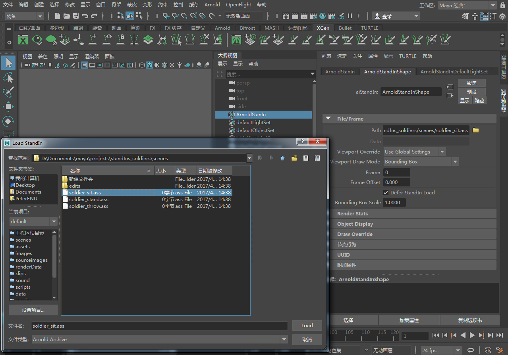
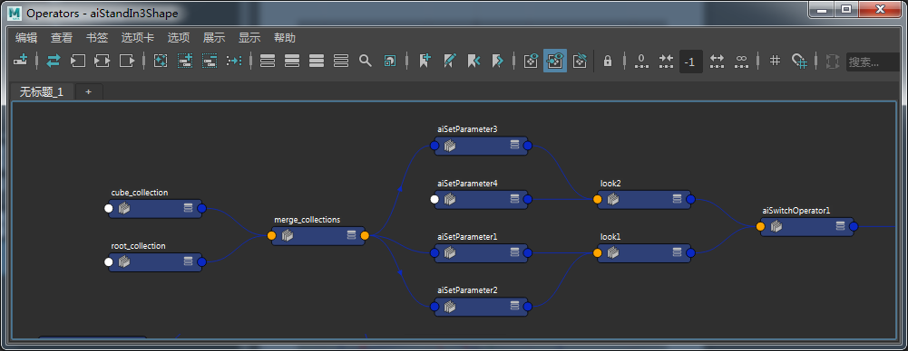

替代对象
| 延伸阅读 |
|---|
| 有关 Arnold 形状和形状参数的完整文档，请参见《Arnold 用户手册》中的形状。 |
您可以将任何对象导出为 .ass 文件。程序（也称为替代对象、代理或占位符）引用磁盘上的 .ass 文件（或 Arnold 支持的其他程序格式，例如 .obj 或 .ply）。利用它们，您可以将几何体数据的加载延缓到渲染时进行，从而使工作场景保持轻巧且适宜（交互）工作。
工作流如下所示：要使用替代对象，必须先导出一些几何体供稍后使用。
要导出几何体，您必须：
- 选择要导出的几何体。
- 转到“Arnold > 场景导出 > 将所有内容/将当前选择导出为 .ASS”(Arnold > Scene Export > Export All/Selection to .ASS)菜单选项。
- 选择归档的名称。
“Arnold > 场景导出 > 将所有内容/将当前选择导出为 .ASS”(Arnold > Scene Export > Export All/Selection to .ASS)菜单选项
- 或者，也可以通过“文件 > 导出全部”(File > Export All)选项将模型导出为替代对象。归档将保存为 Arnold 场景源 (.ass) 文件。

替代对象导出选项
您可以导出单个对象以及由多个对象构成的整个层次。也可以导出单个帧或帧序列。在这种情况下，将在 ass 文件的名称中使用 Maya 渲染器选项的帧填充值。要使用替代对象，需要创建替代对象基本体。使用“文件 > 导入”(File > Import)、“文件 > 创建引用”(File > Create Reference)，或者“Arnold > 替代对象 > 创建”(Arnold > StandIn > Create)（选择您认为最便捷的选项，显示的对话框是相同的），并指定要使用的归档。
请注意，除了归档 (.ass) 文件外，此时还可以加载动态库形式的预编译自定义程序（尽管目前未随 MtoA 附带提供）。

将 .ass 文件作为替代对象导入
这将创建一个替代对象节点，您可以用它来替代常规几何体。下面介绍了替代对象节点的属性。
如果查看替代对象时 Maya 视口运行缓慢，请为网格启用 Maya 的“边界框”(Bounding Box)显示覆盖，然后尝试导出 ass 文件。
文件/帧(File/Frame)
替代对象通过替代对象节点获得支持。此节点具有以下参数：

路径(Path)
归档 (.ass) 文件的路径。归档时可自动识别序列。
填充图案采用以下格式：
- name.#.ext - 例如，name.1.ext、name.2.ext、name.3.ext、...、name.10.ext、...、name.100.ext、...
- name.##.ext - 例如，name.01.ext、name.02.ext、name.03.ext、...、name.10.ext、...、name.100.ext、...
- name.###.ext - 例如，name.001.ext、name.002.ext、name.003.ext、...、name.010.ext、...、name.100.ext、...
- name####.###.ext - 表示帧编号的四位数填充以及子帧数的三位数填充。
例如：如果指向一个名为 test_001.ass 的文件，该文件将以 test_###.ass 格式识别为序列图案。如果要覆盖自动序列识别，则可手动更改路径字符串，并移除带有相应文件名的填充图案。
- 在“渲染设置”(Render Settings)的系统(System)选项卡中，有一个开关可用来启用和禁用程序的绝对/相对路径名称（默认为绝对路径名称）。

视口覆盖(Viewport Override)
- 使用全局设置(Use Global Settings) - 使用“渲染设置”(Render Settings)中的_“替代对象绘制”(Standin Draw)_设置，可确定如何显示_替代对象_。
- 使用局部设置(Use Local Settings) - 这是默认行为。
- 边界框(Bounding Box) - 将替代对象显示为边界框。
- 禁用绘制(Disable Draw) - 禁止显示替代对象。
视口绘制模式(Viewport Draw Mode)
程序的显示模式。

使用文件序列(Use File Sequence)
启用后，它会识别所需的格式并自动打开序列。
帧(Frame)
要读取以替换“使用帧扩展名”(Use Frame Extension)复选框中定义的图案的帧。您需要放置一个 Maya 表达式（“frameNumber = frame”），让一系列替代对象加载到不同的帧。
帧偏移(Frame Offset)
与当前帧的偏移。这允许在创建不同程序时使用相同的动画序列。
覆盖节点(Override Nodes)
可以使用此参数将程序内的节点替换为其他节点。例如，这可以用于替换现有 .ass 程序中的着色器。启用此参数后，程序的直接父项范围内的节点将替换程序内的同名节点。
名称空间(Namespace)
程序可使用此参数声明自定义名称空间。此自定义名称空间可代替程序名称，用来通过绝对或相对路径引用内容。通过使用相同的自定义名称，多个程序可共享同一个名称空间。此外，它们可以声明空名称，这样将使用全局名称空间。
“强制着色器指定”(Force Shader Assignments)参数（对于此工作流是必要的）显示在导出选项用户界面中，并且仅当“导出着色器”(Export Shaders)被禁用时才会显示。
要分别导出替代对象和着色器，工作流将如下所示：
- 导出素材，仅启用“形状”(Shapes)，同时启用“强制着色器指定”(Force Shader Assignment)。
- 再次导出素材，这次仅启用“着色器”(Shaders)。
- 创建两个替代对象，分别加载它们。
- 为两个替代对象设置相同的“名称空间”(Namespace)字符串。
用户选项(User Options)
有关“用户选项”(User Options)的信息，请单击此处。
忽略组节点(Ignore Group Nodes)
可以用于组层次下面的代理几何体，之后在进行渲染时将跳过它们。因此，激活此参数时，任何作为替代对象的父对象的几何体、灯光等都不会显示在渲染中。
对象路径(Object Path)
在层次中展开的 Alembic 路径。
Arnold 程序设置
自动实例化(Auto Instancing)
允许按程序选择使用此功能（目前仅“.ass”程序支持此功能）。启用后，多次使用同一文件名的情况将透明地转化为实例。在使用运算符覆盖程序参数时，此解决方法有时很有用。
仅在要阻止自动实例化同一 .ass 文件时禁用此项。此项默认处于启用状态，且仅供技术用户使用。
Alembic 设置(Alembic Settings)
“导出到 Alembic”(Export to Alembic)位于“Arnold -> 替代对象”(Arnold -> StandIn)菜单中。

此外，Arnold Alembic 导出功能还以 Arnold 格式的命名方式导出细分和用户属性数据，例如：
aiSubdivType = subdiv_type
aiSubdivIterations = subdiv_iterations
曲线基础(Curves Basis)
Alembic 曲线基础覆盖。“自动”(Auto)（默认）使用在 Alembic 中的曲线数据上设置的任何内容。从以下选项中选择：
- 自动(auto)
- bezier
- B 样条曲线(B-spline)
- catmull-rom
- 线性(Linear)
文件内容(File Contents)
在属性编辑器中显示文件的内容，并允许您对所选项目应用覆盖。
提供了一个场景，演示如何对 .abc 文件使用运算符和赋值。

外观(Look)
选择创建、编辑或删除外观变体。创建新外观*时，会自动添加一个 *aiLookSwitch 节点，该节点是 switch_operator 和 merge 的组合并连接到程序图的根。处理第一个外观时，当前运算符将移动到变体切换节点上的第一个输入列表。aiLookSwitch 中的标签用于填充替代对象中的菜单。可以通过“渲染设定”(Render Setup)工具（用于按层/通道添加不同外观）来设置/覆盖此栓。名称/外观/通道将转换为索引编号以进行渲染。
应用“绿色”外观
添加赋值(Add Assignment)
参数列表，可以指定给其中的对象。它可以用于向节点的子对象添加属性和参数赋值。它可为每个选择创建一个 set_parameter 节点，并将其按顺序放在运算符(Operators)列表中。顶部是第一个运算符，层次中的最后一个叶是该列表中的最后一个运算符。
局部覆盖(Local Overrides)
层次中节点上的赋值。
继承赋值(Inherited Assignments)
影响下面的对象或匹配字符串表达式选择的覆盖。

使用最左侧按钮创建的继承赋值
添加运算符(Add Operator)
向图表中的点添加常规运算符。选择字符串必须引用 .ass 文件中的节点。

“运算符”列表
显示图形(Show Graph)
显示形状和与之相连的任何*运算符*的独立图表。

渲染统计信息(Render Stats)
在“渲染统计信息”(Render Stats)部分中，可以对选定的替代对象启用或禁用各种渲染选项。
替代对象覆盖(StandIn Overrides)
覆盖替代对象灯光链接(Override Standin Light Linking)
如果启用此项，则 aiStandin 节点的灯光链接将应用于替代对象中的所有对象。
覆盖替代对象着色器(Override Standin Shaders)
如果启用此项，则应用于 aiStandin 节点的着色器将覆盖替代对象中所有对象上的着色器。

覆盖程序文件内设置的值。禁用 override_... = OFF 意味着替代对象将不强制使用该值。
- 覆盖着色器不会覆盖置换贴图。置换由 Arnold 单独处理。当某一场景由 MtoA 转换至 Arnold 时，置换不属于应用于对象的“着色器”的一部分。
附加属性(Extra Attributes)
除此以外，还有一些附加属性（已对用户隐藏），例如 overridePrimaryVisibility、overrideOpaque 等。这些属性位于_替代对象_的属性编辑器中的“附加属性”(Extra Attributes)底部（参见下文）。如果您使用“替代对象覆盖”(StandIn Overrides)控件，MtoA 将自动更新“附加属性”(Extra Attributes)下的相应复选框。例如，要覆盖“主可见性”(Primary Visibility)，还必须启用附加属性 overridePrimaryVisibility。
通过为网格使用 Arnold 程序转换器，您可以使用代理几何体来表示替代对象。此功能将使用 Maya 中的网格边界框信息。如果替代对象被剪裁，您可以禁用“延缓加载程序”(Defer Procedural Load)，或使用“用户选项”(User Options)设置程序最小值和最大值（例如，最小值 -1 -1 -1，最大值 1 1 1）。

多边形网格程序转换器